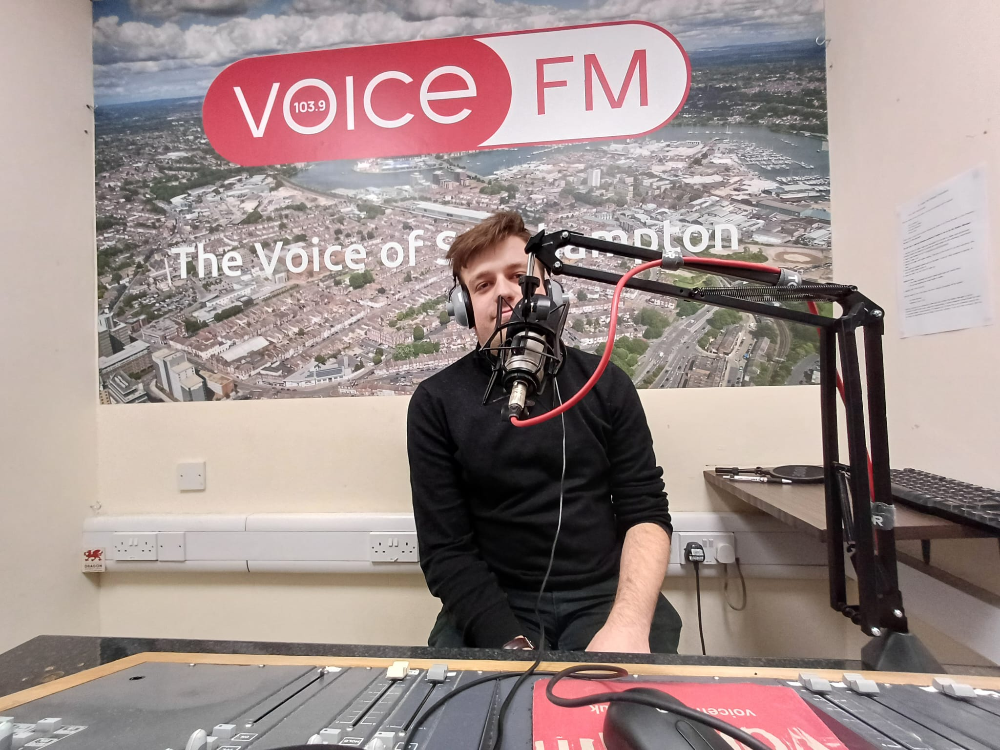
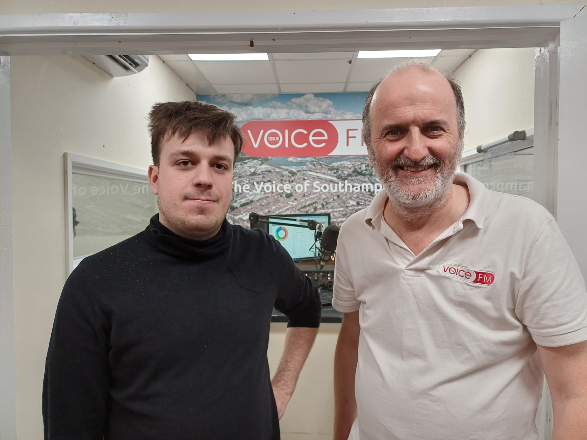

01About the experience
During my time at Voice FM Southampton, I gained practical experience in radio production and broadcasting, taking part in radio programmes and contributing to the production process.
The experience gave me insight into the day-to-day work behind radio broadcasting, including how programmes are prepared, produced and delivered to an audience.
02My involvement
Radio production
Helped produce radio programmes and gained hands-on experience of the production process.
Programme participation
Contributed on air to radio programmes and experienced a live broadcasting environment first-hand.
Broadcasting
Developed a better understanding of how radio content is created and presented to listeners.
03Reference
Anders was great company during his time at Voice FM. We gave him a wide variety of jobs, from production, driving a live show and recording content.
His enthusiasm for each task was very helpful, and his dedication to doing a great job commendable. He asked great questions and picked up techniques quickly.
We really enjoyed having him here and look forward to seeing how he proceeds in this career.
04In the studio


05Key takeaways
My experience at Voice FM strengthened my interest in the music and media industry and gave me a practical understanding of radio as a platform for music, communication and audience engagement.
It also helped me develop a broader perspective on how music and creative content reach audiences through different media channels.